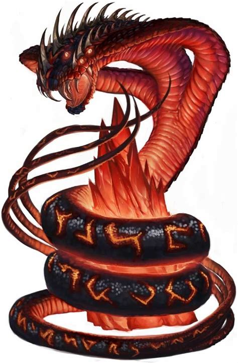

Apep or Apophis (Ancient Greek: Άποφις; also spelled Apepi or Aapep) was an evil god in ancient Egyptian religion, the deification of darkness and chaos (ı͗zft in Egyptian), and thus opponent of light and Ma'at (order/truth), whose existence was believed from the 8th Dynasty (mentioned at Moalla) onwards. His name is reconstructed by Egyptologists as *ʻAʼpāpī, as it was written ꜥꜣpp(y) and survived in later Coptic as Aphōph.
As the personification of all that was evil, Apep was seen as a giant snake, crocodile, serpent, or in later years, in a few cases, as a dragon, leading to titles such as Serpent from the Nile, and Evil lizard. Some elaborations even said that he stretched 16 yards in length and had a head made of flint.
Neither Shu, Maahes nor Serqet were strong enough to kill Apep. Only a few could kill him - boasts that "Every day I slay the enemy of Ra when I stand at the helm of the Barque of Millions of Years, which no other god dare do." He was the only deity who was strong enough to withstand the power of Apep, and to kill the water serpent. The Great Cat of Iunu, Apep and the Sons of Horus (Set resumes): "Back, Fiend, from the onslaught of his light! If you speak, your face will be overturned by the gods. Your heart will be seized by the lynx (Mafdet), your reins will be bound by the scorpion (Hededet), you will be punished by Ma'at, she will bring you to grief." ... (Apep cries out that he will conform to the divine will): "I will perform your will, O Ra, I will act properly, I will act peacefully, O Ra!" (Set speaks again): "Bring your ropes, O Ra, that Apep may fall to your snaring or be trapped by the gods of north, south, east and west in their traps ... All is now well, O Ra! Proceed in peace! And you, Apep, Down! Away, Apep, O Enemy of Ra!" (During the fight with Horus, Set loses his testicles ... Apep now taunts Set with this): "But what you felt is worse than the sting of the scorpion. What ma'at did to you was so dire that you will suffer from its effect forever! You will never go courting, you will never make love!" Set, Defending the Solar Barque Against Apep (Stung by this retort, Set determines to destroy Apep rather than just keep him in bondage ...) "Apep, O Enemy of Ra! Turn your face away! Ra hates the very sight of you." The head is then cut off, hacked in pieces and thrown away on either side of the roads ... "Your head is crushed, O Groundling! Your bones are broken up and your flesh cut in pieces. Ra has consigned you to the earth, O Apep! Enemy of Ra!"